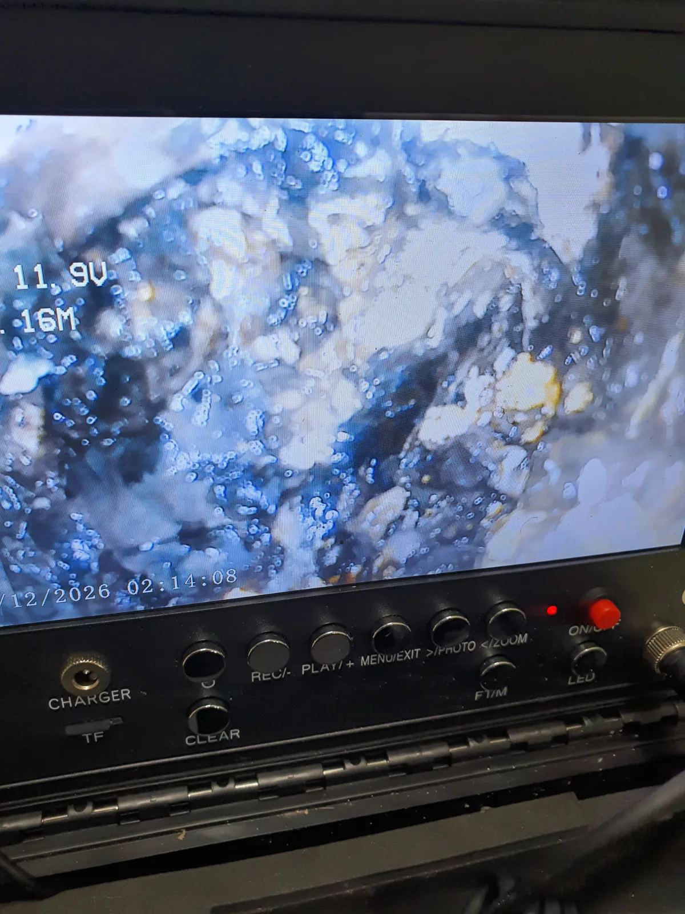

성남시 중원구 중앙동 싱크대막힘, 현장 도착 후 진단
성남시 중원구 중앙동 아파트 싱크대막힘 현장입니다. 싱크대 하부장 문을 열자마자 냄새가 먼저 올라왔습니다. “윽!” 소리가 절로 나왔지만, 침착하게 주름관부터 분리했습니다.
꺼내보니 관 안이 이물질로 꽉 차 있었습니다. 물이 내려가지 않는 이유가 하나는 바로 눈앞에 나타난 셈이죠. 하지만 주름관만 교체하고 끝낼 상황은 아니었습니다. 연결된 배관의 입구부터 안쪽으로 이어지는 구간도 확인해야 했습니다.
1단계: 증상 확인과 필요한 장비 작업
먼저 석션기로 배관 입구에 쌓인 이물질을 제거했습니다. 그다음 내시경을 넣어 내부 상태와 막힘이 이어지는 범위를 살펴봤습니다.
확인해보니 입구 한 지점만의 문제가 아니었습니다. 막힘이 이어진 구간을 확인했기 때문에, 입구만 정리하는 데서 멈추지 않고 막힌 전체 구간을 스케일링하기로 했습니다.

2단계: 원인 구간 처리와 정상 작동 확인
샤프트를 넣어 입구부터 이어진 막힘 구간을 따라 배관스케일링을 진행했습니다. 이번 작업의 핵심은 여기입니다. 눈앞에 보이는 이물질만 걷어내는 게 아니라, 확인된 구간에 쌓인 오염물을 정리해야 했습니다.
배관 안쪽 작업을 마친 뒤에는 이물질로 꽉 차 있던 주름관도 교체했습니다. 주름관과 연결 배관을 각각 확인하고, 상태에 맞춰 필요한 작업을 이어간 현장이었습니다.

작업 결과와 재발 방지 안내
이번 중앙동 싱크대막힘은 주름관에서 뚜렷한 막힘을 발견했지만, 작업은 거기서 끝나지 않았습니다. 석션으로 입구를 정리하고 내시경으로 막힌 범위를 확인한 뒤, 샤프트로 입구부터 막힌 전체 구간을 스케일링했습니다. 마지막으로 주름관을 교체했습니다.
싱크대 배수가 느려지고 하부장에서 냄새가 난다면 주름관에 이물질이 쌓여 있는지 살펴보세요. 주름관을 정리해도 배수가 계속 답답하다면 연결된 배관의 상태도 확인할 필요가 있습니다. 어디까지 막혔는지 먼저 알아야 필요한 범위만 정확하게 작업할 수 있습니다.
최종 조치: 배관 입구의 이물질을 석션으로 제거하고 내시경으로 내부 상태를 확인했습니다. 이어서 막힌 전체 구간을 샤프트로 스케일링한 뒤 주름관을 교체했습니다.
현장 방문 전 확인하는 비용과 작업 범위
신라건축설비는 현장 증상과 배관 구조를 확인한 뒤 필요한 작업과 예상 비용을 안내합니다. 단순 관통으로 해결되는지, 배관내시경·석션·고압세척 또는 추가 장비가 필요한지는 현장 상태에 따라 달라집니다. 출장비와 야간 작업비, 추가 장비 비용이 발생할 수 있는 경우 작업 전에 먼저 설명하고 동의를 받은 범위에서 진행합니다.
업체를 선택할 때 확인할 사항
무조건적인 ‘0원’ 표현보다 실제 작업 범위, 추가 비용 조건, 사용 장비와 사후 대응 기준을 확인하는 것이 중요합니다. 해결되지 않았을 때의 비용 기준과 작업 후 동일 증상 발생 시 점검 범위를 사전에 문의해두면 불필요한 분쟁을 줄일 수 있습니다.
성남시 중원구 싱크대막힘 자주 묻는 질문
싱크대막힘은 왜 반복되나요?
주방 배수관 내부에 기름때·슬러지·음식물 찌꺼기가 누적되거나 배관 구배와 긴 횡주관 때문에 반복될 수 있습니다. 단순 관통 후 다시 막힌다면 배수관 내부 상태를 확인하는 것이 좋습니다. 이번 성남시 중원구 중앙동 현장에서 확인한 원인은 다음과 같습니다. 주름관 내부가 이물질로 꽉 막혀 있었고, 연결된 배관에도 입구부터 이어지는 구간에 오염물이 쌓여 있었습니다.
싱크대 물이 안 내려가거나 역류하면 싱크대뚫는업체를 불러야 하나요?
물이 천천히 빠지거나 싱크대역류가 반복되면 배수구 입구보다 안쪽 주방 배관에 막힘이 있을 수 있습니다. 현장에서는 배수 상태와 막힌 구간을 확인한 뒤 작업 방법을 정합니다.
싱크대 기름때 막힘은 약품으로 해결되나요?
가벼운 오염은 일시적으로 나아질 수 있지만 굳은 기름 슬러지와 배관 내부 스케일은 약품만으로 충분히 제거되지 않는 경우가 있습니다. 반복 막힘은 장비를 이용한 배관 청소가 필요할 수 있습니다.
싱크대뚫는업체는 어떤 장비로 작업하나요?
막힘 위치와 배관 상태에 따라 석션, 샤프트, 배관내시경, 배관 스케일링 장비 등을 사용합니다. 필요한 장비는 현장 진단 후 결정합니다.
싱크대막힘 비용은 어떻게 정해지나요?
막힘 구간의 길이와 오염 정도, 석션·샤프트·내시경 등 장비 투입 범위에 따라 달라질 수 있습니다. 작업 전 예상 범위와 추가 비용 조건을 먼저 안내합니다.
싱크대 악취도 배수관 막힘과 관련 있나요?
기름 슬러지와 음식물 오염이 배수관 내부에 쌓이면 배수 불량과 함께 악취가 나타날 수 있습니다. 다만 트랩이나 연결부 문제도 있어 현장 상태를 함께 확인해야 합니다.
싱크대막힘 서울·경기 출동지역
신라건축설비는 성남시 중원구 중앙동 현장을 포함해 서울 25개 구와 경기도 31개 시·군의 배관 문제를 상담합니다. 현장 거리와 기사 배정 상황에 따라 출동 가능 여부를 먼저 안내드립니다.
서울 전 지역
강남구 · 강동구 · 강북구 · 강서구 · 관악구 · 광진구 · 구로구 · 금천구 · 노원구 · 도봉구 · 동대문구 · 동작구 · 마포구 · 서대문구 · 서초구 · 성동구 · 성북구 · 송파구 · 양천구 · 영등포구 · 용산구 · 은평구 · 종로구 · 중구 · 중랑구
경기도 주요 출동지역
수원시 · 용인시 · 고양시 · 화성시 · 성남시 · 부천시 · 남양주시 · 안산시 · 평택시 · 안양시 · 시흥시 · 파주시 · 김포시 · 의정부시 · 광주시 · 하남시 · 광명시 · 군포시 · 양주시 · 오산시 · 이천시 · 안성시 · 구리시 · 의왕시 · 포천시 · 양평군 · 여주시 · 동두천시 · 과천시 · 가평군 · 연천군